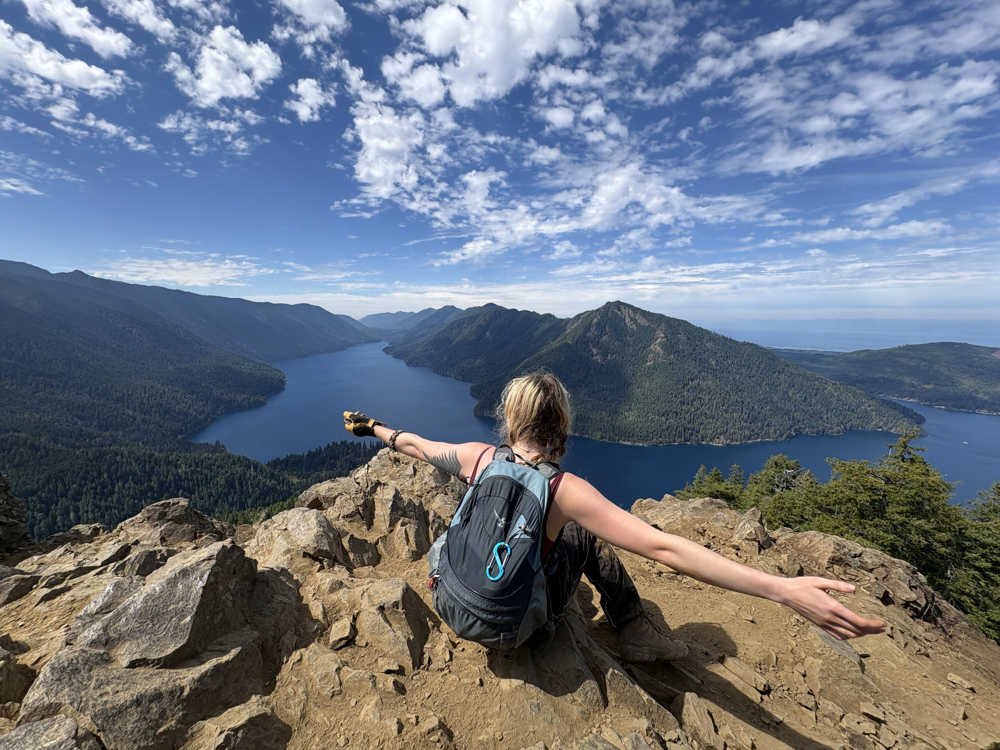
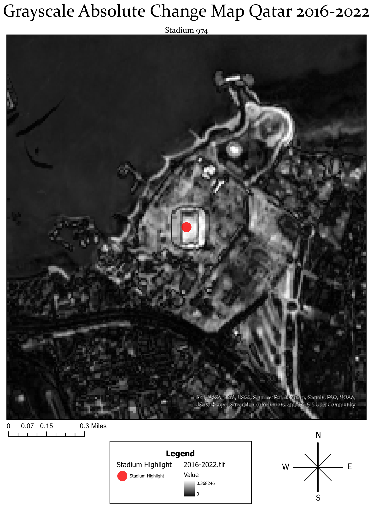
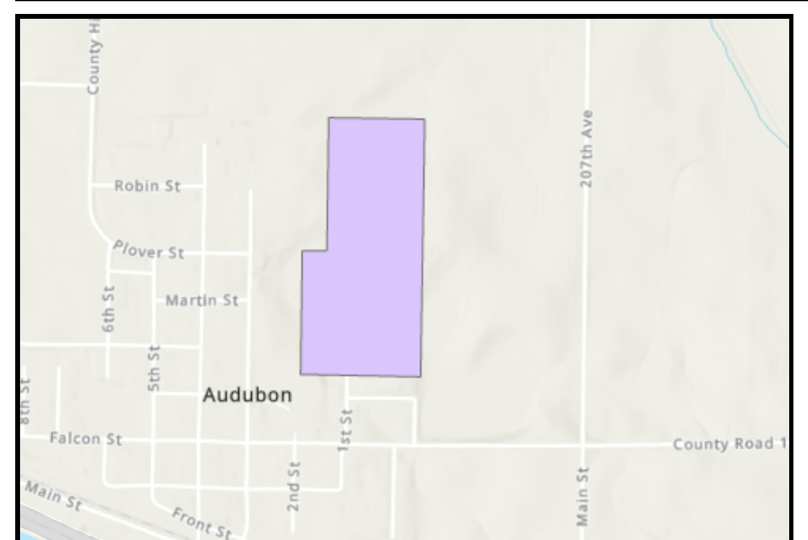
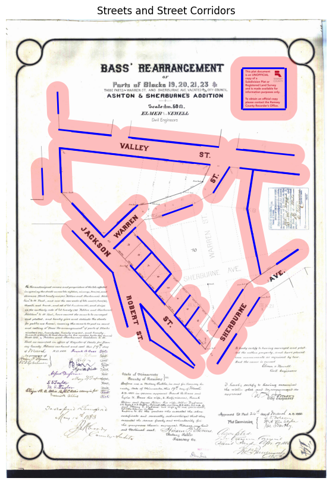

Recent University of Minnesota grad in Geography (GIS) and Plant Science. I build reproducible Python notebooks and try to make the output legible to whoever actually needs it, not just other GIS people. I enjoy solving real-world problems through spatial analysis, and approach them with a focus on usability and impact.

Three recent projects spanning remote sensing, renewable siting, and historical map analysis.



Documented and reproducible. Clone any of these and point them at your own AOI or dataset.
Hot Spot analysis of scooter/bike availability, compared against ACS commuting data
Custom ArcGIS Python Toolbox: downloads LAZ tiles, decompresses to LAS, and builds a DSM raster
I'm a recent graduate of the University of Minnesota, with a B.S. in Geography (GIS) and Plant Science. I was introduced to GIS through a precision agriculture course, and loved it so much that I added it as a second major.
My background spans both plant science and GIS, which gives me a unique toolset for tackling large-scale spatial problems with real scientific grounding behind them: not just the geometry, but why it matters ecologically.
Outside of work I'm usually spending time enjoying what sparked my interest in this field in the first place, the great outdoors. Hiking, kayaking, and plant identification along the way make me feel more in tune with the landscape, and with myself.